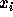

| Partial differential equations |
In engineering sciences, partial differential equations play an important and central role. For example, the temperature of a metal plate can be expressed as a partial differential equation if the temperature on the boundaries is known. This is called a boundary value problem.
Usually, it is not easy to solve these problems. Analytical solutions exist only in very special cases. But there are some more or less "good" numerical ways to solve boundary value problems.
We now will look at one method which works with finite difference approximations for the derivatives of a function. For this approach, we do not look at an analytical function u(x) but we are only interested in the values of u at a finite set of discrete points . The distance between two adjacent points,  and , is constant: (cf. figure 1).
Figure: u(x) at some discrete points
The finite difference approximation of a first derivative of the function u(x) is
The second derivative is approximated by
This approximation works with 2-dimensional functions u(x,y) as well. For simplicity we only work on square problems, i.e. (x, y) is element of . Again, the area of the function is discretized in a similar way: , for some integer . We only look at the values of u(x,y) at the discrete points . With this discretization, we have a function as shown in figure 2:
Figure: Function in the discretization area
On the boundary, is given by 4 known functions:
The points cover the inner points of the discretization area, i.e. the area without the boundary. They are numbered from left to right and from top to bottom like English text.
What we now want to do is to solve the poisson-equation in the area :
with the above boundary conditions. f(x,y) is a given 2-dimensional function. With equation (2) and the above discretization, the poisson-equation can be approximated at
where is the function f(x,y), evaluated at the discrete
points  .
.
Formula (5) can be written in a more readable form, depending on the position of the discrete points:
A similar equation, which we will use as an example below, is:
We call the matrix on the left hand side v and the matrix on the right hand side g.
Now, equation (6b) can be formulated in every point of the discrete area of figure 2:
and (7) is a linear equation system for the values of u(x,y) at the points and .
By rearranging and adding the terms on each line, the linear equation system can be formulated as:
where a is a  matrix and b is a vector with 4 elements. Vector
z represents the unknown values of u(x,y) at the
points and .
matrix and b is a vector with 4 elements. Vector
z represents the unknown values of u(x,y) at the
points and .
You are to write a program that creates the linear equation system (7) in the form (8) for any two matrices v and g (6). As input, the two matrices v and g and the functions , and f are given. Also, a parameter n is given as the number of discretization intervals. Thus, . As the result, your program should calculate the matrix a and the vector b. For this more general case, there are inner points and a and b must be sized accordingly.
The input file consists of m tests. The number m is given in the first line of the file. The first line of each test contains the number n which gives the number of discretizations intervals as defined above. You may assume that . Then the matrices v and g follow. The following four lines contain the functions and , each given as a vector of order n+1, containing the values for 0, h, 2h, ..., 1. Finally, the function f is given as a n+1 by n+1 matrix. Like the vectors before, it contains the values for . Each row contains from left to right the function values for increasing x values while each column contains from top to bottom the function values for decreasing y values.
A vector occupies one line. Its values are given in ascending order, separated by a space. A n by n matrix occupies n lines. Its rows are given in ascending order as vectors, which occupy one line each. All values found in the input file are integer values.
For each test found in the input file, your program should output the matrices a and b. Matrix a is a matrix (the discretization area (cf. figure 2) contains inner points, which are unknown). The vector b is of order . They should be output in the same format as the vectors and matrices in the input file. Your output should only contain integer values. Note that the expression yields an integer number and that all other calculations can also be done using integer numbers.
1 3 1 0 2 0 -4 0 3 0 4 0 5 0 6 0 7 0 8 0 3 4 5 6 0 1 2 3 3 2 1 0 6 5 4 3 1 1 1 1 2 2 2 2 3 3 3 3 4 4 4 4
-36 0 0 36 0 -36 27 0 0 18 -36 0 9 0 0 -36 -35 -188 -189 -315